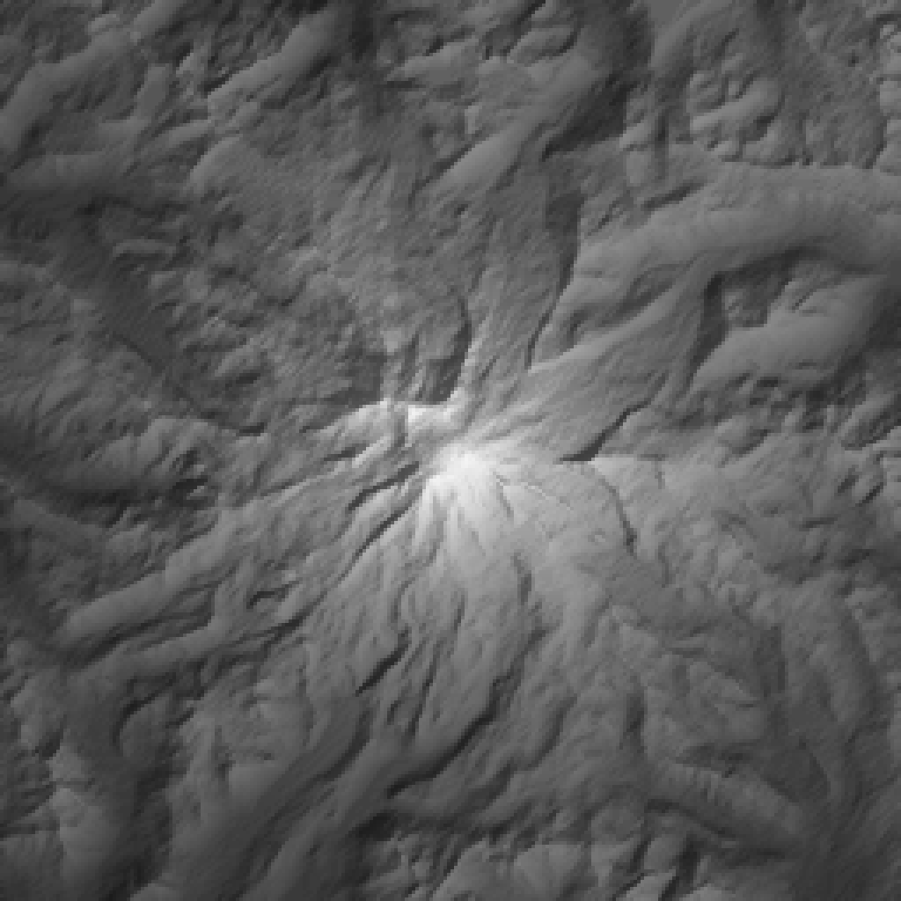
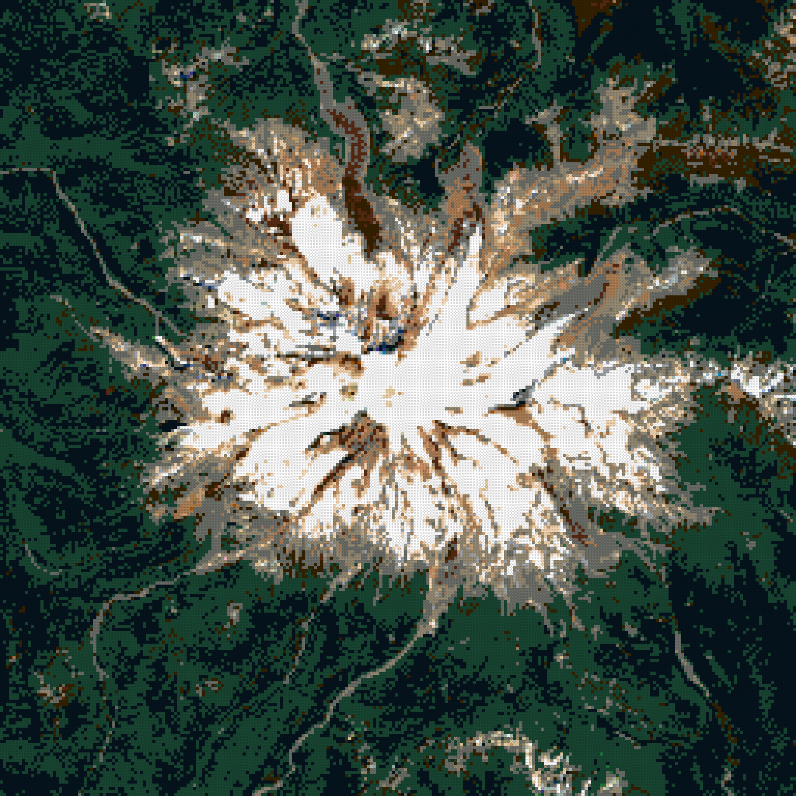
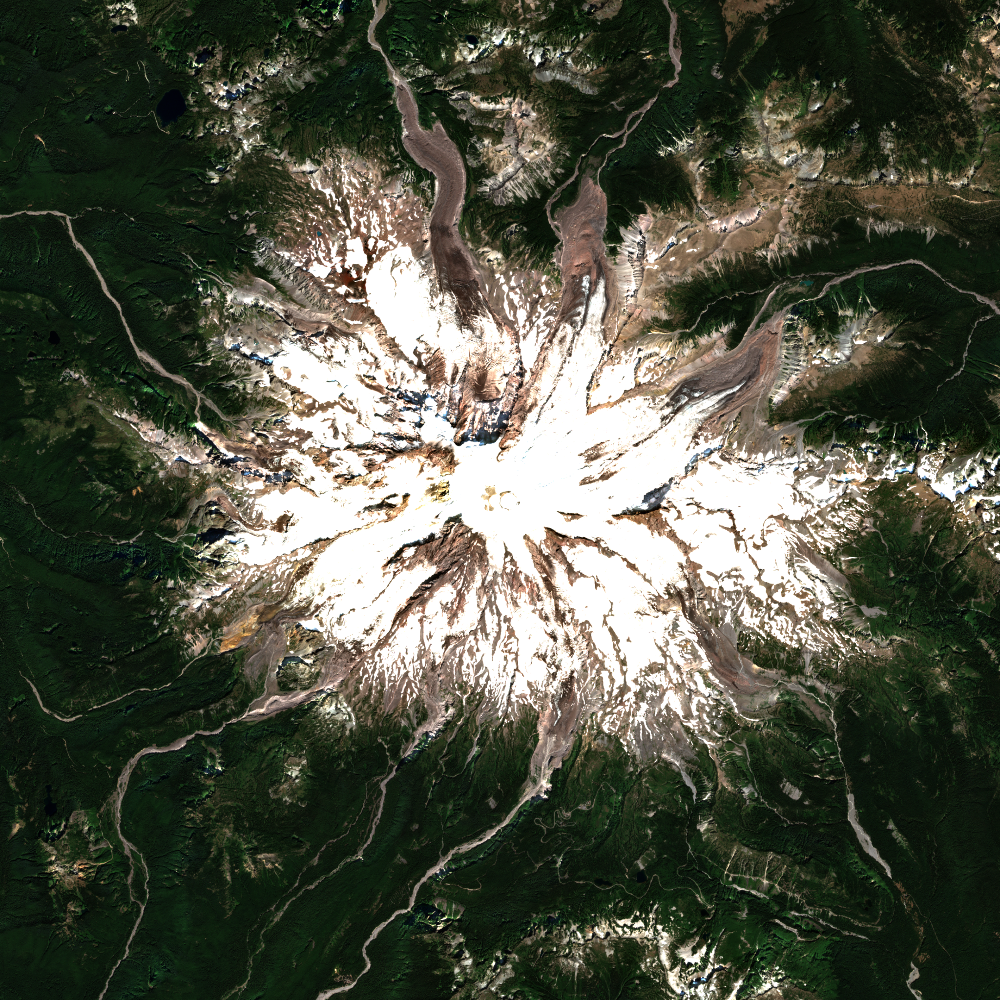

run mount-rainier-20261001T195322 · generator 0.1.0+24ebbbe-dirty · catalog lego-1x1-2026-10-01 · status complete
· variant
max height 148 plates = 473.6 mm · open whole-mountain 3D view



| footprint | 2048.0 × 2048.0 mm (256 × 256 studs) |
|---|---|
| geographic area | 24.00 × 24.00 km, 93.75 m per stud, EPSG:26910 |
| datum | 674.4 m (raw DEM min 665.7 m) |
| summit | 4381.0 m stud-mean at stud [127, 128] (source max 4392.4 m) |
| relief above datum | 3706.5 m |
| meters per plate (1×) | 37.500 |
| max height x1.5 | 148 plates / 473.6 mm |
| LDraw 288 | 20685 studs |
| LDraw 0 | 17081 studs |
| LDraw 72 | 7077 studs |
| LDraw 15 | 6991 studs |
| LDraw 28 | 4292 studs |
| LDraw 308 | 3537 studs |
| LDraw 78 | 1585 studs |
| LDraw 84 | 1363 studs |
| LDraw 371 | 822 studs |
| LDraw 71 | 794 studs |
| LDraw 70 | 547 studs |
| LDraw 19 | 296 studs |
| LDraw 92 | 182 studs |
| LDraw 323 | 102 studs |
| LDraw 378 | 41 studs |
| LDraw 80 | 35 studs |
| LDraw 484 | 18 studs |
| LDraw 330 | 16 studs |
| LDraw 272 | 15 studs |
| LDraw 2 | 14 studs |
| LDraw 379 | 14 studs |
| LDraw 85 | 8 studs |
| LDraw 212 | 5 studs |
| LDraw 297 | 4 studs |
| LDraw 430 | 4 studs |
| LDraw 31 | 3 studs |
| LDraw 321 | 3 studs |
| LDraw 10 | 1 studs |
| LDraw 326 | 1 studs |
| role | provider / dataset | date | license · attribution |
|---|---|---|---|
| elevation | USGS 3DEP 3DEPElevation (Bare Earth DEM Dynamic) | None | Public domain USGS 3D Elevation Program (3DEP) |
| imagery | Element84 Earth Search sentinel-2-l2a | 2017-08-26 | Copernicus Sentinel data terms Contains modified Copernicus Sentinel data 2017 |
| PASS | coverage_complete | non-finite DEM px: 0; non-finite imagery px: 0 |
| PASS | dem_imagery_aligned | 2 grids share bounds EPSG:26910; max extent mismatch 0.000 m |
| PASS | every_stud_has_elevation | 65536 studs |
| PASS | every_stud_has_allowed_color | all colors in catalog |
| PASS | no_terrain_below_datum | min plates per exaggeration: {'x1.5': 0} |
| PASS | quant_error_within_half_plate | max |error| plates: {'x1.5': 0.5} |
| PASS | catalog_colors_currently_produced | 29 colors used; not currently produced: [] |
| PASS | terrain_colors_plate_buildable | every used color is produced as a 1x1 plate |
| PASS | summit_position | DEM max in stud (127, 127); highest stud (127, 128); offset 1 stud(s) |
| PASS | exaggeration_invariance | 1 exaggerations share footprint [(256, 256)] and one color array per color setting (colors are computed independently of exaggeration) |
| PASS | viewer_written | 1 whole-mountain 3D viewer(s) |
| PASS | ldraw_valid:x1.5_sentinel2@2017-08-26_average_diffusion0.10 | 195354 elements checked |
| PASS | ldraw_seams:x1.5_sentinel2@2017-08-26_average_diffusion0.10 | module files together equal the full model |
{
"schemaVersion": 1,
"runId": "mount-rainier-20261001T195322",
"status": "complete",
"generatorVersion": "0.1.0+24ebbbe-dirty",
"createdAt": "2026-10-01T19:53:25+00:00",
"preset": {
"id": "mount-rainier",
"name": "Mount Rainier",
"center": {
"lat": 46.8523,
"lon": -121.7603
},
"boundingBox": {
"widthKm": 24,
"heightKm": 24
},
"targetStudWidth": 256,
"moduleStudSize": 64,
"surfaceResolutionStuds": 1,
"verticalExaggeration": 2,
"datumMode": "surrounding-minimum",
"viewpoints": [
{
"name": "Seattle",
"bearingDeg": 333,
"elevationDeg": 12
},
{
"name": "Tacoma",
"bearingDeg": 311,
"elevationDeg": 12
},
{
"name": "Sunrise",
"bearingDeg": 50,
"elevationDeg": 20
},
{
"name": "Paradise",
"bearingDeg": 164,
"elevationDeg": 20
}
]
},
"bounds": {
"crs": "EPSG:26910",
"minE": 582508.0,
"minN": 5177497.0,
"maxE": 606508.0,
"maxN": 5201497.0,
"metersPerStud": 93.75,
"studWidth": 256,
"studHeight": 256
},
"scale": {
"metersPerPlateTrueScale": 37.5,
"exaggerations": [
1.5
]
},
"datum": {
"mode": "surrounding-minimum",
"elevationM": 674.4448315429687,
"rawDemMinM": 665.722412109375
},
"sources": [
{
"role": "elevation",
"provider": "USGS 3DEP",
"dataset": "3DEPElevation (Bare Earth DEM Dynamic)",
"sourceUrls": [
"https://elevation.nationalmap.gov/arcgis/rest/services/3DEPElevation/ImageServer/exportImage"
],
"itemIds": [],
"acquisitionDate": null,
"nativeResolutionM": 1.0,
"analysisGridPx": 2560,
"nativeCrs": "EPSG:26910",
"license": "Public domain",
"attribution": "USGS 3D Elevation Program (3DEP)",
"cacheKeys": [
"374a95871db8eb87778af7f823ec5471d4dfe9a8f3912d0af1d27c8a15d3a21e",
"bc6b9b374a258f3ee4b28da2570ca6bc28157ac8af36118348a3d2cc2dce091e",
"a3b29e5ed5db522f06da7f95ec27de8a0eeda5c65d374d677f2275628ca9c84c",
"157f767013296b43234e52aab71839d4218f98ae913b2fe513103452dba067c3",
"6de2945450d12e5c95f39c637e4a5b8c87d0d6fe7d3c851efc0b4d4085701439",
"169f583475bc24e7978e1b3fc399ad80db7fecb6460f88c140dcbc160acf994d",
"6e8b517f9191b35f3f14c0c6e97303c064d94f501d5b20d3b98daa92037560e9",
"274088e46fb3fb7ead5fbc72ee689e8c91db7d96fbab1f9a53a2645926d08550",
"f8c5c2fdd835dcddfd19f269a89ec083bce5387cb9949cb43b82e940c93dc6c3",
"adca31b1f3262f11082b9e860c16405486ffff419da5e9f45f13994c1d760f0c",
"461dce5adc7e23b2c43eb729be707a343826d95ce864f89bc04395dd7573b2af",
"9f8bce72e30aa7e7e64c98f755f952f259a5e8ea9776b882bd0a1b5cb83caa8c",
"312d88defb0e813a0245ea4bd8279a2832eee4036227041494ee7ede8e254c0e",
"7321acce9ff6754e6570b500d0f3078971a0b9ce2e8377b799a80bfbe7f67dbd",
"0a4dede3a10a05c76754e0e506b0ff7bcfd2b9360197e5d91b826a3d3e4ca4ad",
"099d818c571503f36957782e2102b12d3e2df46a5c0bffcf56fde1013ff6a9af"
]
},
{
"role": "imagery",
"provider": "Element84 Earth Search",
"dataset": "sentinel-2-l2a",
"sourceUrls": [
"https://sentinel-cogs.s3.us-west-2.amazonaws.com/sentinel-s2-l2a-cogs/10/T/ES/2017/8/S2B_10TES_20170826_0_L2A/TCI.tif",
"https://sentinel-cogs.s3.us-west-2.amazonaws.com/sentinel-s2-l2a-cogs/10/T/ET/2017/8/S2B_10TET_20170826_0_L2A/TCI.tif",
"https://sentinel-cogs.s3.us-west-2.amazonaws.com/sentinel-s2-l2a-cogs/10/T/FS/2017/8/S2B_10TFS_20170826_0_L2A/TCI.tif",
"https://sentinel-cogs.s3.us-west-2.amazonaws.com/sentinel-s2-l2a-cogs/10/T/FT/2017/8/S2B_10TFT_20170826_0_L2A/TCI.tif"
],
"itemIds": [
"S2B_10TES_20170826_0_L2A",
"S2B_10TET_20170826_0_L2A",
"S2B_10TFS_20170826_0_L2A",
"S2B_10TFT_20170826_0_L2A"
],
"acquisitionDate": "2017-08-26",
"nativeResolutionM": 10.0,
"analysisGridPx": 2560,
"nativeCrs": "EPSG:32610",
"license": "Copernicus Sentinel data terms",
"attribution": "Contains modified Copernicus Sentinel data 2017",
"cacheKeys": [
"3b1d3a88fca5648e02fdd6cc6a9d20ca7ae5e5d8ea471519fac3dab1d1def278",
"d5d6446d30646ec33b66ad9242267e8c1a8f278a455547a16bbd0317a0495975",
"7febb8e144019e30eaf4bf7551d80e4361ced0158c8623e4c2d0cdddcc91ce2e",
"344e323304154dbb06f3bceba6040c6aa21ad7a05fcf1a80eb73217feea8a377",
"795e09544f18c15756ba60526f08f9dfce65f87c9e40ca88fc1d79544eedc302",
"a966061585cf82fa8aa1c91788ff69592aa81d8506303271cc8ade4cc938ac10",
"330dd3062a1ac92eb30e72b74dffcab0a6b12f34f0c0a92fa6a2370050d365d6",
"1119a6ab022c912a0f8ab22f96ffbfa085870aa99d7649d1f257354a78ca6ddd"
],
"imageryKey": "sentinel2",
"notes": [
"tiles ['10TES', '10TET', '10TFS', '10TFT']; WGS84 UTM -> NAD83 UTM datum offset (~1-2 m) treated as zero (datumOffsetNote); SCL cloud/shadow fraction 2.3498% (accepted limit 10.00%, owner override via --max-cloud)"
]
}
],
"catalog": {
"version": "lego-1x1-2026-10-01",
"sha256": "313a874bc2e3b9a52333454ffbe36a7d309261fd5b5deb0fcd496c8ef2922d2d",
"terrainPalette": {
"rule": "colors currently produced as 1x1 plate (3024)",
"size": 47,
"excluded": []
}
},
"variants": [
{
"key": "x1.5_sentinel2@2017-08-26_average_diffusion0.10",
"verticalExaggeration": 1.5,
"color": {
"imagerySource": "sentinel2",
"imageryDate": "2017-08-26",
"sampling": "average",
"assignment": "diffusion",
"diffusionStrength": 0.1
},
"metrics": {
"maxHeightPlates": 148,
"maxHeightMm": 473.6,
"colorDistribution": {
"0": 17081,
"2": 14,
"10": 1,
"15": 6991,
"19": 296,
"28": 4292,
"31": 3,
"70": 547,
"71": 794,
"72": 7077,
"78": 1585,
"80": 35,
"84": 1363,
"85": 8,
"92": 182,
"212": 5,
"272": 15,
"288": 20685,
"297": 4,
"308": 3537,
"321": 3,
"323": 102,
"326": 1,
"330": 16,
"371": 822,
"378": 41,
"379": 14,
"430": 4,
"484": 18
}
}
}
],
"summary": {
"geographicWidthM": 24000.0,
"geographicHeightM": 24000.0,
"physicalWidthMm": 2048.0,
"physicalDepthMm": 2048.0,
"summitStud": [
127,
128
],
"summitElevationM": 4380.98908203125,
"summitSourceElevationM": 4392.380859375,
"reliefM": 3706.5442504882817
},
"outputs": {
"canonical": {
"path": "canonical.npz",
"sha256": "55fa6ecf6a7cf781670bfffa146e6edbec535eb5464d157349acaf2f9c35cb40"
},
"preview:height-x1.5": {
"path": "./height-x1.5.png",
"sha256": "af32591634275def0965bf5bfa28730b9c0f42e35c8731c31a4dd4bb21d3c469"
},
"preview:color-sentinel2@2017-08-26_average_diffusion0.10": {
"path": "./color-sentinel2@2017-08-26_average_diffusion0.10.png",
"sha256": "7530bc449a481320c59f1bbf0ae1991c9a5bc1465448b36998987c64056fe43f"
},
"preview:imagery-sentinel2@2017-08-26": {
"path": "./imagery-sentinel2@2017-08-26.png",
"sha256": "4addf6758d924287fd83d0e433c7e0ddb370bd454e59d4b2f26a5233c404d2ba"
},
"viewer:x1.5_sentinel2@2017-08-26_average_diffusion0.10": {
"path": "viewer/x1.5_sentinel2@2017-08-26_average_diffusion0.10.html",
"sha256": "518de3ff1fe8d6628eebdec23d3b5d21f2e54d54ac415bd77e907d6b413e8013"
},
"ldraw:x1.5_sentinel2@2017-08-26_average_diffusion0.10:Module_A1": {
"path": "ldraw/x1.5_sentinel2@2017-08-26_average_diffusion0.10/Module_A1.ldr",
"sha256": "ac60e1bc5502cd223a34feae488969f937e87ade2b7a92034d8edc28c88213c1"
},
"ldraw:x1.5_sentinel2@2017-08-26_average_diffusion0.10:Module_A2": {
"path": "ldraw/x1.5_sentinel2@2017-08-26_average_diffusion0.10/Module_A2.ldr",
"sha256": "da82a848a92d8c185095f17e53297657e3dbdce3f61601c1f1b0acbf5639f918"
},
"ldraw:x1.5_sentinel2@2017-08-26_average_diffusion0.10:Module_A3": {
"path": "ldraw/x1.5_sentinel2@2017-08-26_average_diffusion0.10/Module_A3.ldr",
"sha256": "e3354119b507b7c252d0d4bbfa8bbcba72715c94ec52fa931b61792281bae08f"
},
"ldraw:x1.5_sentinel2@2017-08-26_average_diffusion0.10:Module_A4": {
"path": "ldraw/x1.5_sentinel2@2017-08-26_average_diffusion0.10/Module_A4.ldr",
"sha256": "e520780d6d68ed3214c26f7110c482362ba570500abb27098c2e5262f6d97746"
},
"ldraw:x1.5_sentinel2@2017-08-26_average_diffusion0.10:Module_B1": {
"path": "ldraw/x1.5_sentinel2@2017-08-26_average_diffusion0.10/Module_B1.ldr",
"sha256": "632cb9d1ad65969c017c192284273287341d47cc9df2bc847b548f9ba253ae8e"
},
"ldraw:x1.5_sentinel2@2017-08-26_average_diffusion0.10:Module_B2": {
"path": "ldraw/x1.5_sentinel2@2017-08-26_average_diffusion0.10/Module_B2.ldr",
"sha256": "c0b16aba63d884036db20bbd0fca7e2f1c35439ac25205e165ae4ab6c81c5b98"
},
"ldraw:x1.5_sentinel2@2017-08-26_average_diffusion0.10:Module_B3": {
"path": "ldraw/x1.5_sentinel2@2017-08-26_average_diffusion0.10/Module_B3.ldr",
"sha256": "84792a0a024b849503217162d1559cebc4481bb9c322a74bce3958c43d66ee2e"
},
"ldraw:x1.5_sentinel2@2017-08-26_average_diffusion0.10:Module_B4": {
"path": "ldraw/x1.5_sentinel2@2017-08-26_average_diffusion0.10/Module_B4.ldr",
"sha256": "e961562f9c6131e5c4d9a5ef385e48400a398824d9aefe43eb67f08cdd420d8d"
},
"ldraw:x1.5_sentinel2@2017-08-26_average_diffusion0.10:Module_C1": {
"path": "ldraw/x1.5_sentinel2@2017-08-26_average_diffusion0.10/Module_C1.ldr",
"sha256": "ce541469193d424bc4b7284139eb803dc8e4382a428fb199579915592dd0f4bd"
},
"ldraw:x1.5_sentinel2@2017-08-26_average_diffusion0.10:Module_C2": {
"path": "ldraw/x1.5_sentinel2@2017-08-26_average_diffusion0.10/Module_C2.ldr",
"sha256": "5d4132c17a93c51cc3e3ed02730986508b36f6120be70b65b25bc459616cbb06"
},
"ldraw:x1.5_sentinel2@2017-08-26_average_diffusion0.10:Module_C3": {
"path": "ldraw/x1.5_sentinel2@2017-08-26_average_diffusion0.10/Module_C3.ldr",
"sha256": "c5646b8422706a0b31c41a4267ba3935e661926180128d1aab5432f7ccb5102b"
},
"ldraw:x1.5_sentinel2@2017-08-26_average_diffusion0.10:Module_C4": {
"path": "ldraw/x1.5_sentinel2@2017-08-26_average_diffusion0.10/Module_C4.ldr",
"sha256": "70a4f421fa8d0f7e6b7fffb333eaad97887696ad023bf0e1397daabb32b7670a"
},
"ldraw:x1.5_sentinel2@2017-08-26_average_diffusion0.10:Module_D1": {
"path": "ldraw/x1.5_sentinel2@2017-08-26_average_diffusion0.10/Module_D1.ldr",
"sha256": "377a5245d5350c1bb4053c235f0550098451ea7531d0ceb69d900ea4b3987b33"
},
"ldraw:x1.5_sentinel2@2017-08-26_average_diffusion0.10:Module_D2": {
"path": "ldraw/x1.5_sentinel2@2017-08-26_average_diffusion0.10/Module_D2.ldr",
"sha256": "23556d6583fde162197d91918d3b6fe839d1bea57c01f6d3ada4536ae7ddab94"
},
"ldraw:x1.5_sentinel2@2017-08-26_average_diffusion0.10:Module_D3": {
"path": "ldraw/x1.5_sentinel2@2017-08-26_average_diffusion0.10/Module_D3.ldr",
"sha256": "f889d00357324b87bf0dcf17fc6131cd6402c67e4b76a30ce9bf80aa48c66b6d"
},
"ldraw:x1.5_sentinel2@2017-08-26_average_diffusion0.10:Module_D4": {
"path": "ldraw/x1.5_sentinel2@2017-08-26_average_diffusion0.10/Module_D4.ldr",
"sha256": "d05c78581c4c45c2ba119a5bc592b2c55557c04059a9e7691f61e01c735509ba"
},
"ldraw:x1.5_sentinel2@2017-08-26_average_diffusion0.10:full": {
"path": "ldraw/x1.5_sentinel2@2017-08-26_average_diffusion0.10/Mount_Rainier.mpd",
"sha256": "21ba711a5254a939c1750d870b0a0531677f23a3e2c1bc104767c0cbe042c0f3"
}
},
"validation": [
{
"check": "coverage_complete",
"passed": true,
"detail": "non-finite DEM px: 0; non-finite imagery px: 0"
},
{
"check": "dem_imagery_aligned",
"passed": true,
"detail": "2 grids share bounds EPSG:26910; max extent mismatch 0.000 m"
},
{
"check": "every_stud_has_elevation",
"passed": true,
"detail": "65536 studs"
},
{
"check": "every_stud_has_allowed_color",
"passed": true,
"detail": "all colors in catalog"
},
{
"check": "no_terrain_below_datum",
"passed": true,
"detail": "min plates per exaggeration: {'x1.5': 0}"
},
{
"check": "quant_error_within_half_plate",
"passed": true,
"detail": "max |error| plates: {'x1.5': 0.5}"
},
{
"check": "catalog_colors_currently_produced",
"passed": true,
"detail": "29 colors used; not currently produced: []"
},
{
"check": "terrain_colors_plate_buildable",
"passed": true,
"detail": "every used color is produced as a 1x1 plate"
},
{
"check": "summit_position",
"passed": true,
"detail": "DEM max in stud (127, 127); highest stud (127, 128); offset 1 stud(s)"
},
{
"check": "exaggeration_invariance",
"passed": true,
"detail": "1 exaggerations share footprint [(256, 256)] and one color array per color setting (colors are computed independently of exaggeration)"
},
{
"check": "viewer_written",
"passed": true,
"detail": "1 whole-mountain 3D viewer(s)"
},
{
"check": "ldraw_valid:x1.5_sentinel2@2017-08-26_average_diffusion0.10",
"passed": true,
"detail": "195354 elements checked"
},
{
"check": "ldraw_seams:x1.5_sentinel2@2017-08-26_average_diffusion0.10",
"passed": true,
"detail": "module files together equal the full model"
}
],
"exportMode": "both",
"ldrawCounts": {
"x1.5_sentinel2@2017-08-26_average_diffusion0.10": {
"Module_A1": 6421,
"Module_A2": 6170,
"Module_A3": 6124,
"Module_A4": 6041,
"Module_B1": 5750,
"Module_B2": 5917,
"Module_B3": 5750,
"Module_B4": 5750,
"Module_C1": 6100,
"Module_C2": 5741,
"Module_C3": 5796,
"Module_C4": 6253,
"Module_D1": 7207,
"Module_D2": 6318,
"Module_D3": 6171,
"Module_D4": 6168,
"Mount_Rainier": 97677
}
}
}